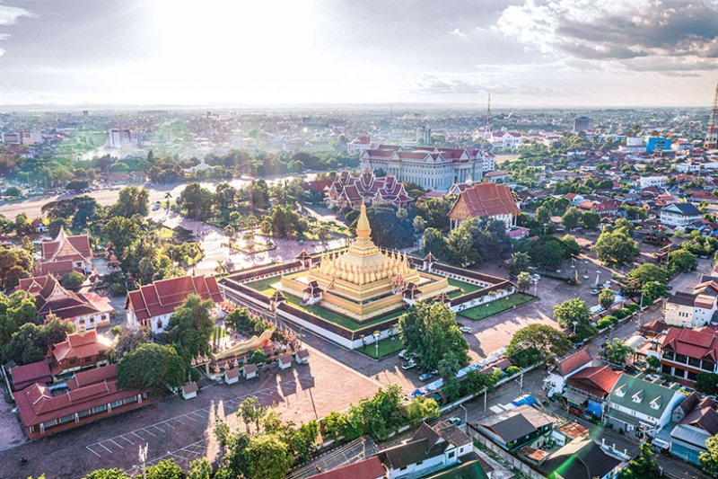
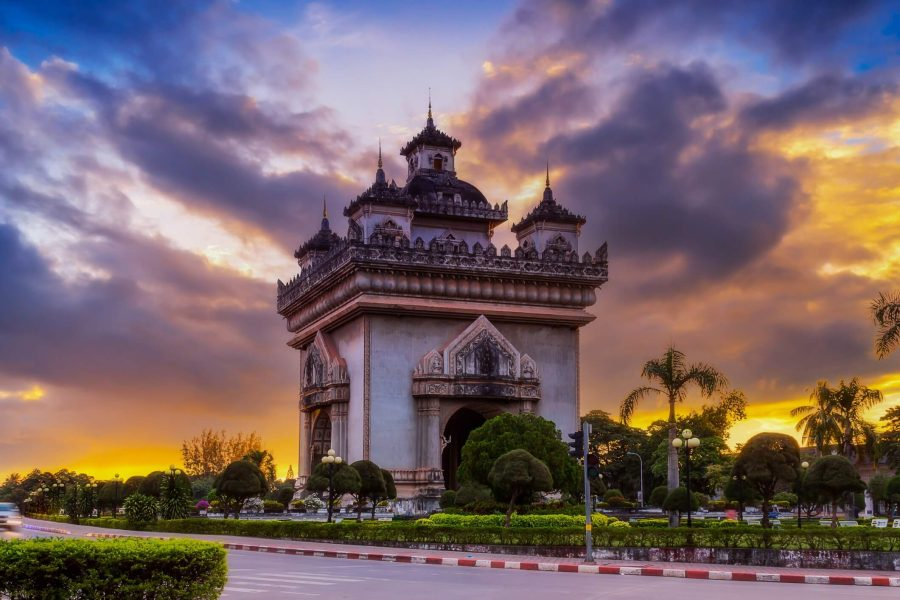

Vientiane Capital
Vientiane is the capital city of Laos, located in the central part of the country along the Mekong River, right on the border with Thailand. It is the largest city in Laos and serves as the political, cultural, and economic center of the country.

Transportation
airplanemode_activeBy Domestic Flights (from Wattay Airport)
| Province | Main City | By Plane (Approx.) | Notes |
|---|---|---|---|
| Luang Prabang | Luang Prabang | 45 minutes | Frequent daily flights |
| Champasak | Pakse | 1 hour 20 minutes | Longest regular domestic flight |
| Savannakhet | Savannakhet | 1 hour | Usually 1 flight per day |
| Xieng Khouang | Phonsavan | 45 minutes | Small aircraft flights |
| Luang Namtha | Luang Namtha | 1 hour | Limited schedule |
| Oudomxay | Oudomxay | 1 hour | Small airport, not daily |
| Houaphan | Sam Neua | 1 hour | Very limited flights |
| Phongsaly | Houayxai (via Bokeo) | 1 hr to Houayxai + 4 hrs road | No direct flights |
| Xayabouly | Xayabouly town | No flights | Road only |
directions_busBy Road (Bus or Private Vehicle)
| Province | Main City | Approx. Travel Time (Hours) | Notes |
|---|---|---|---|
| Luang Prabang | Luang Prabang | 8–10 hrs | Winding roads, beautiful views |
| Oudomxay | Muang Xay | 11–13 hrs | Northern mountainous area |
| Luang Namtha | Luang Namtha | 14–16 hrs | Remote, northernmost provinces |
| Bokeo | Houayxai | 13–15 hrs | Border with Thailand |
| Phongsaly | Phongsaly | 20–22 hrs | Furthest north, slow roads |
| Xayabouly | Xayabouly | 7–9 hrs | No airport, all road |
| Xieng Khouang | Phonsavan | 8–9 hrs | Curvy roads through mountains |
| Houaphan | Sam Neua | 15–18 hrs | Far east, road condition varies |
| Vientiane Province | Vang Vieng | 2.5–3.5 hrs | Good road, popular tourist stop |
| Bolikhamxay | Paksan | 3.5–4 hrs | Southeast of Vientiane |
| Khammouane | Thakhek | 7–8 hrs | Central Laos, along Route 13 |
| Savannakhet | Savannakhet | 9–11 hrs | Route 13 South |
| Salavan | Salavan | 12–13 hrs | Southern Laos |
| Sekong | Sekong | 14–15 hrs | Remote and mountainous |
| Attapeu | Attapeu | 15–17 hrs | Southernmost province |
| Champasak | Pakse | 12–14 hrs | Major southern city |
trainLaos-China High-Speed Railway (from Vientiane Station)
- Vientiane to Luang Prabang: ~2 hours
- Vientiane to Oudomxay: ~4.5 hours
- Vientiane to Boten (China border): ~6–7 hours
- Not available to southern provinces like Savannakhet or Pakse
Patuxay
about Patuxay
Name: Patuxay (Victory Gate)Location: Vientiane, Laos
Built: Between 1957 and 1968
Purpose: To honour Laotian soldiers who died during World War II and the war for independence from France
Height: About 49 meters (160 feet) Location
Thatluang

about Patuxay
Name: Patuxay (Victory Gate)Location: Vientiane, Laos
Built: Between 1957 and 1968
Purpose: To honour Laotian soldiers who died during World War II and the war for independence from France
Height: About 49 meters (160 feet) Location
Buddha Park (Wat Xieng Khouane Luang)

about Patuxay Wat Xieng Khouane Luang
Name: Patuxay (Victory Gate)Location:25 km southeast of Vientiane, near the Mekong River
Built:In 1958 by Luang Pu Bunleua Sulilat
Purpose:Luang Pu Bunleua Sulilat was very spiritual and believed in combining Buddhism and Hinduism together
What makes it special?:
The park has over 200 statues made of concrete.
They include Buddhas, Hindu gods, animals, demons, and mythical creatures.
One of the main highlights is a huge Reclining Buddha statue, which is very impressive. Location
Hotels
Top-rated places to stay in the city.
Restaurants
Best places to eat local and international cuisine.